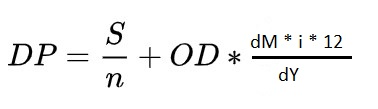

1. График платежей/подсчет переплаты.
Данный модуль помогает рассчитать переплату и общую сумму платежа, исходя из данных, введенных пользователем. Кроме этого выводится детальная информация платежей по месяцам и дается возможность сохранить таблицу в формате ".csv". Данные необходимые к заполнению:
Так же по желанию пользователя можно добавить к данным сумму страховки.
Формула расчета аннуитетного платежа
где P - аннуитетный платеж по кредиту, S - требуемая сумма займа, r - Процентная ставка в месяц и n - срок кредита в месяцах.
Формула расчета дифференцированного платежа

где S - сумма кредита, n - количество месяцев, i - Процентная ставка в месяц, dM - количество дней в месяце, dY - количество дней в году .
2. Предсказание процентной ставки.
Данный модуль предсказывает процентную ставку по кредиту исходя из суммы кредита, итоговой суммы платежа и количеству месяцев. Сумма кредита должна быть не меньше 30000 и не больше 100000000, общая сумма платежа не может быть меньше суммы кредита и количество месяцев от 1 до 200.
3. Загрузка таблицы платежей.
Данный модуль позволяет пользователю загрузить данные сохраненной таблицы ежемесячных платежей и визуализирует их с помощью графика.